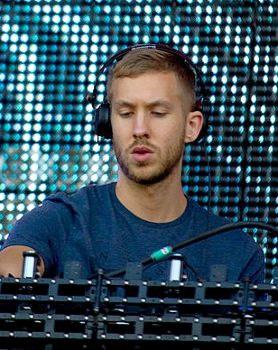

Return to main page
Top Electronic Music Artists
-
 Avicii: Known for hits like "Wake Me Up" and "Levels," Avicii revolutionized EDM with his unique sound.
Avicii: Known for hits like "Wake Me Up" and "Levels," Avicii revolutionized EDM with his unique sound.
-

Calvin Harris: A globally renowned DJ and producer, creating chart-topping tracks that blend pop and electronic music.
-
David Guetta: One of the pioneers of EDM, with collaborations featuring artists from all genres.
-
Martin Garrix: A young talent who gained fame with "Animals" and continues to dominate the charts.
-
Zedd: Famous for his melodic tracks like "Clarity" and "Stay the Night."
Emerging Artists
-
 Illenium: Blending emotional lyrics with heavy drops, Illenium has quickly risen to fame.
Illenium: Blending emotional lyrics with heavy drops, Illenium has quickly risen to fame.
-
Madeon: A French producer known for his intricate soundscapes and creative energy.
-
REZZ: With her dark, hypnotic beats, REZZ is carving a unique path in electronic music.